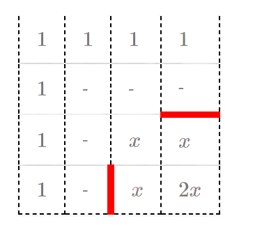
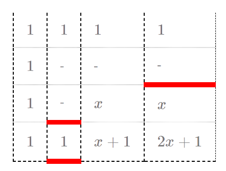
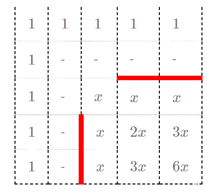
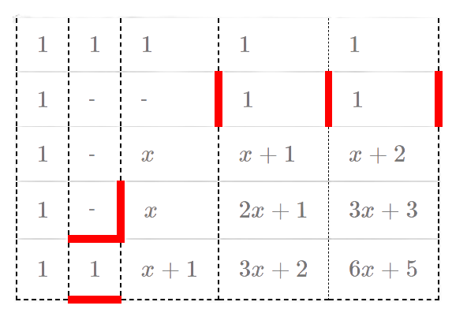
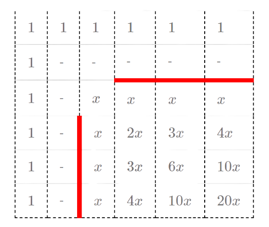
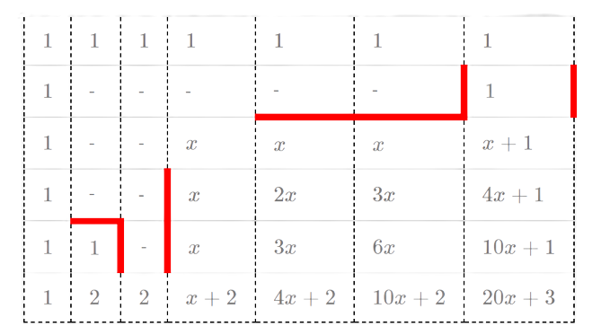
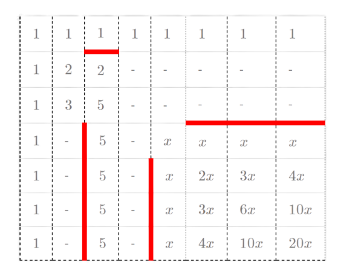
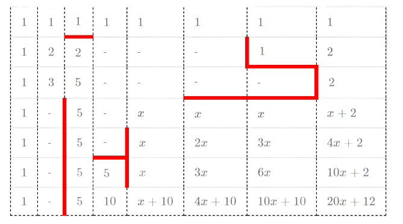

Source
因為維護者是用一些十分奇幻(?)的方法來搬運此Editorial的，所以內容與原文有任何出入請告訴我。
A. 礦砂採集
這題是很典型的連續背包問題 。結論非常簡單：只要不斷貪婪地將單位重量價值最大的礦砂放進背包，直到背包已滿或所有礦砂均已被放入，就能最大化總價值。
一個簡單的做法是將所有礦砂依照單位重量價值由大到小排序，依序放入背包直到滿即可。複雜度是O ( n log n ) O(n \log n) O ( n log n )
線性做法
雖然並不是本題的考點，但有一個值得一提的 O ( n ) O(n) O ( n ) x i x_i x i
隨機選擇一個礦砂 i i i ≥ x i \ge x_i ≥ x i < x i < x_i < x i
若單位價值 ≥ x i \ge x_i ≥ x i < x i < x_i < x i x x x
反之則將價值 ≥ x i \ge x_i ≥ x i x x x
演算法與 quickselect 非常相似，期望時間複雜度為 O ( n ) O(n) O ( n )
B. 村莊與小徑
這題是一道最短路徑的問題，但給定的限制中有幾個點要注意：
給定的圖是 DAG（有向無環圖）。
邊權可能是負的。
條件 1 保證這張圖存在拓樸排序，求解可用 top-down DP，或找出拓樸排序後用 bottom-up DP。
fill ( dis, dis+ n+ 1 , INF) ;
dis[ 1 ] = 0 ;
for ( int i= 1 ; i<= n; i++ ) {
int p = ord[ i] ;
for ( Edge j: fr[ p] ) dis[ p] = min ( dis[ p] , dis[ j. to] + j. weight) ;
}
以上的做法複雜度是 O ( n + m ) O(n+m) O ( n + m )
錯誤／部分解法
值得一提的是這題有幾個預設的錯誤解法：
Dijkstra: 不能處理負權的最短路。
Bellman–Ford / SPFA: 這類演算法在最糟情況下的複雜度是 Θ ( n m ) \Theta(nm) Θ ( nm )
C. 樣本解析
把給定的 X X X X 1 X_1 X 1 X 2 X_2 X 2 X 1 X_1 X 1 X 2 X_2 X 2 O ( 2 m ) O(2^m) O ( 2 m ) O ( n ) O(n) O ( n ) O ( 2 m × n ) O(2^m \times n) O ( 2 m × n ) m m m X X X
要怎麼實作得比較簡潔是這一題的重點，這裡給一些小技巧供參考：
用 int 或 std::bitset 表示集合
一個集合可以用一個 int 儲存，其中第 i i i i i i std::bitset 以協助實作。
枚舉所有的子集合
若用 int 儲存集合，可以用一個 for 迴圈枚舉所有的子集合。
for ( int i= x; ; i= ( i- 1 ) & x) {
cout << i << '\n' ;
if ( i== 0 ) break ;
}
這個迴圈枚舉並輸出 x x x i i i
觀察細節
題目所求的 P 5 P_5 P 5 P 5 P_5 P 5 0 0 0 2 2 2
不失一般性，假定 X X X S 1 S_1 S 1 x ∈ X ∩ S 1 x \in X\cap S_1 x ∈ X ∩ S 1
如果 ( X 1 , X 2 ) (X_1, X_2) ( X 1 , X 2 ) X 1 X_1 X 1 X 2 X_2 X 2 x ∈ X 1 x \in X_1 x ∈ X 1
我們發現 X 1 X_1 X 1 X ∩ S 1 X\cap S_1 X ∩ S 1 P 5 = 2 P_5 = 2 P 5 = 2 P 5 = 0 P_5 = 0 P 5 = 0 y ∈ X 1 y\in X_1 y ∈ X 1 y ∉ X ∩ S 1 y\notin X\cap S_1 y ∈ / X ∩ S 1 y ∉ S 1 y\notin S_1 y ∈ / S 1 X 1 X_1 X 1 S 1 S_1 S 1 X 1 ⊆ X ∩ S 1 X_1\subseteq X\cap S_1 X 1 ⊆ X ∩ S 1 y ∈ X ∩ S 1 y\in X\cap S_1 y ∈ X ∩ S 1 y ∉ X 1 y\notin X_1 y ∈ / X 1 y ∈ X 2 y\in X_2 y ∈ X 2 X 2 X_2 X 2 S 1 S_1 S 1 X ∩ S 1 ⊆ X 1 X\cap S_1\subseteq X_1 X ∩ S 1 ⊆ X 1
當然這題測資範圍並不要求觀察出這個結論，即使枚舉所有的子集合仍然能拿到滿分。
D. 水果包裝
觀察與結論
換個方式來思考這一題：假設每次機器在選定最小重量的袋子後，由你決定放入哪顆水果。那麼這題存在一個非常簡單的結論：如果給定的包裝結果是可能的，只要重量越輕的水果越先放，總是能達成該包裝結果。
或許這個結論不難猜，但要好好證明也許會花點時間。假設題目給定的包裝是存在解的，也就是存在一個解的序列：( b 1 , w 1 ) , ( b 2 , w 2 ) , ⋯ , ( b n , w n ) . (b_1, w_1), (b_2, w_2), \cdots,(b_n, w_n). ( b 1 , w 1 ) , ( b 2 , w 2 ) , ⋯ , ( b n , w n ) . ( b i , w i ) (b_i, w_i) ( b i , w i ) i i i b i b_i b i w i w_i w i
我們將焦點放在這個解序列中，由「放入相同袋子的兩步驟」所形成的子區間：( b , w 1 ) , ⋯ , ( b , w 2 ) . (b, w_1), \cdots, (b, w_2). ( b , w 1 ) , ⋯ , ( b , w 2 ) . w 1 > w 2 w_1 > w_2 w 1 > w 2 ( b , w 2 ) , ⋯ , ( b , w 1 ) , ⋯ (b, w_2), \cdots, (b, w_1), \cdots ( b , w 2 ) , ⋯ , ( b , w 1 ) , ⋯ b b b ( b , w 1 ) (b, w_1) ( b , w 1 ) ( b , w 2 ) (b, w_2) ( b , w 2 ) w 1 w_1 w 1 b b b
經過複數次上述「交換同袋子水果順序」的操作以後，我們可以將任意一個解的序列交換成對每個袋子而言收到的水果重量皆為從小到大。由於任意解的順序都可以經由以上的交換得到同一個序列，若從小拿到大仍然無法滿足題目給定的包裝，代表無解。
實作 O( n(log n + log m) )
實作上我們會需要一個資料結構可以
知道現在最輕且編號最小的袋子 b b b
將還沒放入 b b b b b b b b b
只要將包裝結果中的每個袋子的水果依重量排序，便可隨時查出該將哪個水果放入袋子中；找出最輕的袋子與更新重量部分，可以用堆積或 std::priority_queue 維護，在 O ( log m ) O(\log m) O ( log m ) O ( n ( log n + log m ) ) O(n(\log n+\log m)) O ( n ( log n + log m ))
E. 共同朋友
O(n³)
首先這題有一個簡單的 naive O ( n 3 ) O(n^3) O ( n 3 )
for ( int i= 1 ; i<= n; i++ ) {
for ( int j= i+ 1 ; j<= n; j++ ) {
if ( have_common_friends ( i, j) )
answer++ ;
}
}
計算 have_common_friends() 最簡單的方法是寫一個迴圈，需時 O ( n ) O(n) O ( n )
O(n³/B)
我們利用 std::bitset f[i] 的第 j j j i i i j j j have_common_friends() 的迴圈實作。想求 i i i j j j
由於 std::bitset 的實作方式為 bit array，執行時間會比一般的陣列快數十倍以上。當然自己用陣列來實作 bit array 也是可行的：
unsigned bit ( int x) {
return 1u << x;
}
void add_friend ( int i, int j) {
j-- ;
f[ i] [ j/ 32 ] |= bit ( j% 32 ) ;
}
bool have_common_friends ( int i, int j) {
int len = ( n+ 31 ) / 32 ;
for ( int k= 0 ; k< len; k++ ) {
if ( f[ i] [ k] & f[ j] [ k] ) return true ;
}
return false ;
}
F. 歡樂外送點
從題敘中的圖 1 可以觀察到所有的商店服務範圍都是一個 45 45 45 45 45 45
座標變換
考慮將平面上的所有點做如下的變換：( x y ) ↦ ( x ′ y ′ ) : = ( x + y x − y ) . \begin{pmatrix}x\\y\end{pmatrix} \mapsto \begin{pmatrix}x'\\y'\end{pmatrix} := \begin{pmatrix}x+y\\x-y\end{pmatrix}. ( x y ) ↦ ( x ′ y ′ ) := ( x + y x − y ) . ( x 1 , y 1 ) , ( x 2 , y 2 ) (x_1, y_1), (x_2, y_2) ( x 1 , y 1 ) , ( x 2 , y 2 ) ∣ x 1 − x 2 ∣ + ∣ y 1 − y 2 ∣ |x_1-x_2| + |y_1-y_2| ∣ x 1 − x 2 ∣ + ∣ y 1 − y 2 ∣ ( x 1 ′ , y 1 ′ ) , ( x 2 ′ , y 2 ′ ) (x_1', y_1'), (x_2', y_2') ( x 1 ′ , y 1 ′ ) , ( x 2 ′ , y 2 ′ ) 切比雪夫距離 max { ∣ x 1 ′ − x 2 ′ ∣ , ∣ y 1 ′ − y 2 ′ ∣ } \max\{|x_1'-x_2'|, |y_1'-y_2'|\} max { ∣ x 1 ′ − x 2 ′ ∣ , ∣ y 1 ′ − y 2 ′ ∣ } ( x , y , r ) (x, y, r) ( x , y , r ) ( x + y , x − y ) (x+y, x-y) ( x + y , x − y ) 2 r 2r 2 r x , y x, y x , y ( a ′ , b ′ ) (a', b') ( a ′ , b ′ ) { x ′ − r ≤ a ′ ≤ x ′ + r , y ′ − r ≤ b ′ ≤ y ′ + r , \begin{cases}x'-r\leq a'\leq x'+r,\\y'-r\leq b'\leq y'+r,\end{cases} { x ′ − r ≤ a ′ ≤ x ′ + r , y ′ − r ≤ b ′ ≤ y ′ + r , ( a , b ) (a, b) ( a , b ) ( x , y ) (x, y) ( x , y ) r r r ( x ′ , y ′ ) (x', y') ( x ′ , y ′ ) ( y ′ − x ′ 2 , y ′ + x ′ 2 ) ∈ Z 2 (\frac{y'-x'}{2}, \frac{y'+x'}{2}) \in \mathbb{Z}^2 ( 2 y ′ − x ′ , 2 y ′ + x ′ ) ∈ Z 2 x ′ ≡ y ′ ( mod 2 ) x'\equiv y'\ (\operatorname{mod}2) x ′ ≡ y ′ ( mod 2 )
值得一提的是這個變換在程式競賽中頗常見，例如 IOI2017 的 pair 也出現一樣的技巧。上面連結的解析裡面有對這個變換的證明，如果讀者對旋轉矩陣 不熟，推薦可以直接把這個變換記起來。
掃描線
做完上述變換後，在不考慮題目問的是整數點的情況下，可以把題目簡化成這樣：
「平面上有一些與 x , y x,y x , y
這個問題是一個含有區間更新的 2D RMQ 問題，但因為所有矩形為已知，可以離線利用掃描線 掃其中一軸，並用線段樹或平衡二元搜尋樹維護掃描線上的最大值，時間複雜度 O ( n log n ) O(n \log n) O ( n log n )
由於原始題目有 x ′ ≡ y ′ ( mod 2 ) x'\equiv y'\ (\operatorname{mod}2) x ′ ≡ y ′ ( mod 2 )
用兩棵線段樹維護掃描線上的最大值，一棵只維護奇數座標而另一棵維護偶數座標，查詢時再根據掃描線掃過的範圍決定查哪棵線段樹。
只考慮 x ′ , y ′ x^{\prime}, y^{\prime} x ′ , y ′ 2 2 2 [ 2 , 5 ] [2, 5] [ 2 , 5 ] [ 2 , 4 ] [2, 4] [ 2 , 4 ] [ 1 , 2 ] [1, 2] [ 1 , 2 ]
這個將 2D 問題轉成掃描線降維的技巧相當著名，一個應用是計算二維的矩形面積覆蓋問題 (ref1 , ref2 )，40 40 40 歷史 了。由於這個技巧在網路上可以找到的資源非常多，限於篇幅這裡就不詳細介紹了，對此技巧不熟的讀者也能從學著做這題開始。
G. 矩陣相乘
本節假定讀者知道什麼是機率分佈與隨機變數，並了解「一組隨機變數為 iid (independent and identically distributed，獨立同分佈)」的意思。此外，為了討論方便，以下先約定一些符號：
Z p \mathbb{Z}_p Z p p p p { 0 , 1 , … , p − 1 } \{0, 1, \ldots, p-1\} { 0 , 1 , … , p − 1 } p p p Z p × \mathbb{Z}_p^\times Z p × Z p \mathbb{Z}_p Z p { 1 , 2 , … , p − 1 } \{1, 2, \ldots, p-1\} { 1 , 2 , … , p − 1 } Z p n \mathbb{Z}_p^n Z p n Z p \mathbb{Z}_p Z p n n n M n × m ( Z p ) \mathcal{M}_{n\times m}(\mathbb{Z}_p) M n × m ( Z p ) Z p \mathbb{Z}_p Z p n × m n\times m n × m 設 v ∈ Z p n \mathbf{v} \in \mathbb{Z}_p^n v ∈ Z p n v i v_i v i ( v ) i (\mathbf{v})_i ( v ) i v \mathbf{v} v i i i
設 A = ( a i j ) 1 ≤ i ≤ n , 1 ≤ j ≤ m \mathbf{A} = (a_{ij})_{1 \leq i \leq n, 1 \leq j \leq m} A = ( a ij ) 1 ≤ i ≤ n , 1 ≤ j ≤ m A u : d ; l : r \mathbf{A}_{u: d; l: r} A u : d ; l : r ( a i j ) u ≤ i ≤ d , l ≤ j ≤ r (a_{ij})_{u \leq i \leq d, l \leq j \leq r} ( a ij ) u ≤ i ≤ d , l ≤ j ≤ r
設 E E E P [ E ] \mathbb{P}[E] P [ E ] E E E
設 X X X D D D X ∼ D X \sim D X ∼ D X X X D D D
設 S S S S S S U ( S ) \mathcal{U}(S) U ( S ) X ∼ U ( S ) X \sim \mathcal{U}(S) X ∼ U ( S ) x ∈ S x \in S x ∈ S P [ X = x ] = 1 / ∣ S ∣ \mathbb{P}[X = x] = 1/|S| P [ X = x ] = 1/∣ S ∣
觀察
直接用矩陣乘法定義計算 A B \mathbf{AB} AB O ( n 3 ) O(n^3) O ( n 3 ) n = 2800 n=2800 n = 2800 A B \mathbf{AB} AB A \mathbf{A} A B \mathbf{B} B
如果已經知道 C = A B \mathbf{C} = \mathbf{AB} C = AB 0 0 0 O ( n 2 ) O(n^2) O ( n 2 )
給定 v ∈ Z p n \mathbf{v} \in \mathbb{Z}_p^n v ∈ Z p n O ( n 2 ) O(n^2) O ( n 2 ) C v = ( A B ) v = A ( B v ) \mathbf{Cv} = (\mathbf{AB})\mathbf{v} = \mathbf{A}(\mathbf{Bv}) Cv = ( AB ) v = A ( Bv )
設 v ∈ Z p n \mathbf{v} \in \mathbb{Z}_p^n v ∈ Z p n C \mathbf{C} C i i i 0 0 0 ( C v ) i = 0 (\mathbf{Cv})_i = 0 ( Cv ) i = 0 C \mathbf{C} C i i i c i j c_{ij} c ij 0 0 0 p p p v \mathbf{v} v ( C v ) i = c i 1 v 1 + c i 2 v 2 + … + c i n v n (\mathbf{Cv})_i = c_{i1}v_1+c_{i2}v_2+\ldots+c_{in}v_n ( Cv ) i = c i 1 v 1 + c i 2 v 2 + … + c in v n 0 0 0
[定理A] 設 X 1 , X 2 , … , X n ∼ U ( Z p ) X_1, X_2, \ldots, X_n \sim \mathcal{U}(\mathbb{Z}_p) X 1 , X 2 , … , X n ∼ U ( Z p ) c 1 , c 2 , … , c n ∈ Z p × c_1, c_2, \ldots, c_n \in \mathbb{Z}_p^\times c 1 , c 2 , … , c n ∈ Z p × c 1 X 1 + c 2 X 2 + … + c n X n ∼ U ( Z p ) . c_1X_1 + c_2X_2 + \ldots + c_nX_n \sim \mathcal{U}(\mathbb{Z}_p). c 1 X 1 + c 2 X 2 + … + c n X n ∼ U ( Z p ) .
我們對 n n n n = 1 n = 1 n = 1 x ∈ Z p x \in \mathbb{Z}_p x ∈ Z p P [ c 1 X 1 = x ] = P [ X 1 = x / c 1 ] = 1 / p . \mathbb{P}[c_1X_1 = x] = \mathbb{P}[X_1 = x/c_1] = 1/p. P [ c 1 X 1 = x ] = P [ X 1 = x / c 1 ] = 1/ p . x x x c 1 X 1 ∼ U ( Z p ) c_1X_1 \sim \mathcal{U}(\mathbb{Z}_p) c 1 X 1 ∼ U ( Z p )
當 n ≥ 2 n \geq 2 n ≥ 2 x ∈ Z p x \in \mathbb{Z}_p x ∈ Z p
P [ c 1 X 1 + … + c n X n = x ] = ∑ y ∈ Z p P [ c 1 X 1 + … + c n − 1 X n − 1 = y , c n X n = x − y ] = ∑ y ∈ Z p P [ c 1 X 1 + … + c n − 1 X n − 1 = y ] P [ c n X n = x − y ] = ∑ y ∈ Z p ( 1 p ) ( 1 p ) = 1 / p . \begin{split}
\mathbb{P}[c_1X_1 + \ldots + c_nX_n = x] &= \sum_{y\in\mathbb{Z}_p}\mathbb{P}[c_1X_1 + \ldots + c_{n-1}X_{n-1} = y,\ c_nX_n = x-y]\\
&= \sum_{y\in\mathbb{Z}_p}\mathbb{P}[c_1X_1+\ldots+c_{n-1}X_{n-1}=y]\mathbb{P}[c_nX_n = x-y]\\
&= \sum_{y \in \mathbb{Z}_p}(\frac{1}{p})(\frac{1}{p}) = 1/p.
\end{split} P [ c 1 X 1 + … + c n X n = x ] = y ∈ Z p ∑ P [ c 1 X 1 + … + c n − 1 X n − 1 = y , c n X n = x − y ] = y ∈ Z p ∑ P [ c 1 X 1 + … + c n − 1 X n − 1 = y ] P [ c n X n = x − y ] = y ∈ Z p ∑ ( p 1 ) ( p 1 ) = 1/ p . X i X_i X i n = 1 n=1 n = 1 x x x
我們把定理A寫成比較容易用的形式：
[推論A] 設 X 1 , X 2 , … , X n ∼ U ( Z p ) X_1, X_2, \ldots, X_n \sim \mathcal{U}(\mathbb{Z}_p) X 1 , X 2 , … , X n ∼ U ( Z p ) c 1 , c 2 , … , c n ∈ Z p c_1, c_2, \ldots, c_n \in \mathbb{Z}_p c 1 , c 2 , … , c n ∈ Z p Y = c 1 X 1 + c 2 X 2 + … + c n X n Y = c_1X_1 + c_2X_2 + \ldots + c_nX_n Y = c 1 X 1 + c 2 X 2 + … + c n X n
若存在某個 c i ≠ 0 c_i \neq 0 c i = 0 則 Y ∼ U ( Z p ) Y \sim \mathcal{U}(\mathbb{Z}_p) Y ∼ U ( Z p ) 若 c i = 0 c_i = 0 c i = 0 對於每個 i i i 則 Y = 0 Y = 0 Y = 0
演算法
我們用以下的函式來展示演算法是怎麼進行的。這個函式接受兩個參數 A ′ ∈ M r × n ( Z p ) , B ′ ∈ M n × m ( Z p ) \mathbf{A'} \in \mathcal{M}_{r\times n}(\mathbb{Z}_p), \mathbf{B'} \in \mathcal{M}_{n\times m}(\mathbb{Z}_p) A ′ ∈ M r × n ( Z p ) , B ′ ∈ M n × m ( Z p ) C ′ = A ′ B ′ ∈ M r × m ( Z p ) \mathbf{C'} = \mathbf{A'B'} \in \mathcal{M}_{r\times m}(\mathbb{Z}_p) C ′ = A ′ B ′ ∈ M r × m ( Z p ) 0 0 0 A ′ ← A , B ′ ← B \mathbf{A'}\gets\mathbf{A}, \mathbf{B'}\gets\mathbf{B} A ′ ← A , B ′ ← B
生成 t t t v 1 , v 2 , … , v t \mathbf{v_1}, \mathbf{v_2}, \ldots, \mathbf{v_t} v 1 , v 2 , … , v t ( v i ) j ∼ U ( Z p ) (\mathbf{v_i})_j \sim \mathcal{U}(\mathbb{Z}_p) ( v i ) j ∼ U ( Z p ) t n tn t n
計算 C ′ v 1 , C ′ v 2 , … , C ′ v t \mathbf{C'v_1}, \mathbf{C'v_2}, \ldots, \mathbf{C'v_t} C ′ v 1 , C ′ v 2 , … , C ′ v t
若某個 i i i ( C ′ v 1 ) i = ( C ′ v 2 ) i = … = ( C ′ v t ) i = 0 (\mathbf{C'v_1})_i = (\mathbf{C'v_2})_i = \ldots = (\mathbf{C'v_t})_i = 0 ( C ′ v 1 ) i = ( C ′ v 2 ) i = … = ( C ′ v t ) i = 0 C ′ \mathbf{C'} C ′ i i i 0 0 0 C ′ \mathbf{C'} C ′ i i i 0 0 0
如果某個隨機向量 v j \mathbf{v_j} v j ( C ′ v j ) i (\mathbf{C'v_j})_i ( C ′ v j ) i 0 0 0 C ′ \mathbf{C'} C ′ i i i 0 0 0
若某個隨機向量 v j \mathbf{v_j} v j ( C ′ v j ) i (\mathbf{C'v_j})_i ( C ′ v j ) i 0 0 0 C ′ \mathbf{C'} C ′ i i i 0 0 0 i i i 0 0 0 1 / p 1/p 1/ p
這裡隨機選擇多條向量來測試，並將所有向量求出非 0 0 0 0 0 0
設上步驟中，沒被判為 0 0 0 N N N
若此時 C ′ \mathbf{C'} C ′ 1 1 1 i ∈ N i \in N i ∈ N 0 0 0
否則從 A ′ \mathbf{A'} A ′ A N ′ \mathbf{A'_N} A N ′ B L ′ = B ′ 1 : n ; 1 : ⌊ m / 2 ⌋ , B R ′ = B ′ 1 : n ; ⌊ m / 2 ⌋ + 1 : m \mathbf{B'_L} = \mathbf{B'}_{1:n; 1:\lfloor m/2\rfloor}, \mathbf{B'_R} = \mathbf{B'}_{1:n; \lfloor m/2\rfloor+1: m} B L ′ = B ′ 1 : n ; 1 : ⌊ m /2 ⌋ , B R ′ = B ′ 1 : n ; ⌊ m /2 ⌋ + 1 : m C L ′ = A N ′ B L ′ , C R ′ = A N ′ B R ′ \mathbf{C'_L} = \mathbf{A'_NB'_L}, \mathbf{C'_R} = \mathbf{A'_NB'_R} C L ′ = A N ′ B L ′ , C R ′ = A N ′ B R ′ C L ′ \mathbf{C'_L} C L ′ C R ′ \mathbf{C'_R} C R ′ 0 0 0 C ′ \mathbf{C'} C ′ 0 0 0
計算 C ′ v i = A ′ ( B ′ v i ) \mathbf{C'v_i} = \mathbf{A'}(\mathbf{B'v_i}) C ′ v i = A ′ ( B ′ v i ) O ( n ( m + r ) ) O(n(m+r)) O ( n ( m + r ))
m m m n n n 由於 C \mathbf{C} C 2 n 2n 2 n 0 0 0 r r r 4 n 4n 4 n
因此每一層遞迴呼叫的總計算量為 O ( t n 2 ) O(tn^2) O ( t n 2 ) B \mathbf{B} B n × n n\times n n × n O ( log n ) O(\log n) O ( log n ) O ( t n 2 log n ) O(tn^2 \log n) O ( t n 2 log n )
估計
上述的演算法並不保證 100 % 100\% 100% C ′ \mathbf{C'} C ′ i i i 0 0 0 j ∈ { 1 , 2 , … , t } j \in \{1, 2, \ldots, t\} j ∈ { 1 , 2 , … , t } ( C ′ v j ) i = c i 1 ( v j ) 1 + c i 2 ( v j ) 2 + … + c i n ( v j ) n (\mathbf{C'v_j})_i = c_{i1}(\mathbf{v_j})_1+c_{i2}(\mathbf{v_j})_2+\ldots+c_{in}(\mathbf{v_j})_n ( C ′ v j ) i = c i 1 ( v j ) 1 + c i 2 ( v j ) 2 + … + c in ( v j ) n 1 / p 1/p 1/ p 0 0 0 0 0 0 1 / p t 1/p^t 1/ p t 2 n 2n 2 n 0 0 0 ⌈ log 2 n ⌉ + 1 \lceil\log_2 n\rceil+1 ⌈ log 2 n ⌉ + 1 2 n ( ⌈ log 2 n ⌉ + 1 ) p t ≤ 5600 ⋅ 13 3 7 t = 72800 / 3 7 t . \frac{2n (\lceil\log_2 n \rceil+1)}{p^t} \leq \frac{5600\cdot13}{37^t} = 72800/37^t. p t 2 n (⌈ log 2 n ⌉ + 1 ) ≤ 3 7 t 5600 ⋅ 13 = 72800/3 7 t . t = 5 t = 5 t = 5 1 % 1\% 1%
一個值得注意的是，唯有每個 j j j ( C ′ v j ) i = 0 (\mathbf{C'v_j})_i = 0 ( C ′ v j ) i = 0 C ′ \mathbf{C'} C ′ i i i 0 0 0 t = 1 t=1 t = 1 s s s 0 0 0 s = 5 s = 5 s = 5
考慮 C \mathbf{C} C 0 0 0 c i j c_{ij} c ij c i j c_{ij} c ij C ′ \mathbf{C'} C ′ i ′ i' i ′ ( C ′ v 1 ) i ′ = 0 (\mathbf{C'v_1})_{i'} = 0 ( C ′ v 1 ) i ′ = 0 c i j c_{ij} c ij 13 13 13 c i j c_{ij} c ij 1 − ( 36 / 37 ) 13 < 0.3 1-(36/37)^{13} < 0.3 1 − ( 36/37 ) 13 < 0.3 s s s 0. 3 s 0.3^s 0. 3 s 0 0 0 2 n ≤ 5600 2n \leq 5600 2 n ≤ 5600 0 0 0 5600 ⋅ 0. 3 s 5600\cdot0.3^s 5600 ⋅ 0. 3 s s = 11 s = 11 s = 11 1 % 1\% 1%
部分分解法
子任務 1
在這個子任務中，C \mathbf{C} C 0 0 0 i i i 0 0 0 c i c_i c i ( i , j i ) (i, j_i) ( i , j i ) C ( 1 1 ⋮ 1 ) = ( c 1 c 2 ⋮ c n ) . \mathbf{C}\begin{pmatrix}1\\1\\\vdots\\1\end{pmatrix} = \begin{pmatrix}c_1\\c_2\\\vdots\\c_n\end{pmatrix}. C ⎝ ⎛ 1 1 ⋮ 1 ⎠ ⎞ = ⎝ ⎛ c 1 c 2 ⋮ c n ⎠ ⎞ . O ( n 2 ) O(n^2) O ( n 2 ) c i c_i c i p ≥ 2801 p \geq 2801 p ≥ 2801 p > n p > n p > n C ( 1 2 ⋮ n ) = ( c 1 j 1 c 2 j 2 ⋮ c n j n ) . \mathbf{C}\begin{pmatrix}1\\2\\\vdots\\n\end{pmatrix} = \begin{pmatrix}c_1j_1\\c_2j_2\\\vdots\\c_nj_n\end{pmatrix}. C ⎝ ⎛ 1 2 ⋮ n ⎠ ⎞ = ⎝ ⎛ c 1 j 1 c 2 j 2 ⋮ c n j n ⎠ ⎞ . c i c_i c i Z p × \mathbb{Z}_p^\times Z p × j i j_i j i 100 % 100\% 100% O ( n 2 ) O(n^2) O ( n 2 )
子任務 2
在這個子任務中，修改一開始介紹的「隨機」演算法，便能得到一個 100 % 100\% 100% v 1 = ( 1 1 ⋮ 1 ) , v 2 = ( 1 2 ⋮ m ) \mathbf{v_1} = \begin{pmatrix}1\\1\\\vdots\\1\end{pmatrix}, \mathbf{v_2} = \begin{pmatrix}1\\2\\\vdots\\m\end{pmatrix} v 1 = ⎝ ⎛ 1 1 ⋮ 1 ⎠ ⎞ , v 2 = ⎝ ⎛ 1 2 ⋮ m ⎠ ⎞ 0 0 0 c i , x c_{i,x} c i , x c i , y c_{i,y} c i , y ( x ≠ y ) (x \neq y) ( x = y ) 0 0 0 v 1 \mathbf{v_1} v 1 0 0 0 c i , x + c i , y = 0 c_{i,x} + c_{i,y} = 0 c i , x + c i , y = 0 ( C v 2 ) i = c i , x x + c i , y y = ( c i , x + c i , y ) x + c i , y ( y − x ) = c i , y ( y − x ) . (\mathbf{Cv_2})_i = c_{i,x} x + c_{i,y} y = (c_{i,x} + c_{i,y})x + c_{i,y}(y-x) = c_{i, y}(y-x). ( C v 2 ) i = c i , x x + c i , y y = ( c i , x + c i , y ) x + c i , y ( y − x ) = c i , y ( y − x ) . m ≤ n < p m \leq n < p m ≤ n < p y − x ≠ 0 y-x \neq 0 y − x = 0 ( C v 2 ) i = c i , y ( y − x ) ≠ 0 (\mathbf{Cv_2})_i = c_{i,y}(y-x) \neq 0 ( C v 2 ) i = c i , y ( y − x ) = 0
時間複雜度如同前面分析過的，為 O ( n 2 log n ) O(n^2 \log n) O ( n 2 log n ) 100 % 100\% 100%
H. 跑跑遊戲場
觀察
首先要湊到的路徑數最大是 1 0 18 10^{18} 1 0 18 33 × 33 33 \times 33 33 × 33 ( 64 32 ) ≈ 1.8 × 1 0 18 \binom{64}{32} \approx 1.8 \times 10^{18} ( 32 64 ) ≈ 1.8 × 1 0 18
注意此時半周長為 66 66 66 90 90 90 T T T
2 進位
如果往乘法的方向來構造解答的話，可以發現一個可行的方向是利用進位制來操作。下面為 2 2 2


以上兩圖為例，如果在地圖的最上方與最左方留下一列及一行 1 1 1 x x x 2 x 2x 2 x 2 x + 1 2x+1 2 x + 1 T T T 2 2 2 n + m = 121 n+m = 121 n + m = 121 38 38 38
6 進位／10 進位
多進位的思考方式和 2 2 2 6 6 6

這裡要注意的是上面以及左邊的兩道門，如果將門打開的話讓最上面／最左邊的 1 1 1 6 x 6x 6 x
左邊門 1 1 1 3 3 3
左邊門 2 2 2 1 1 1
上方門 1 1 1 3 3 3
上方門 2 2 2 1 1 1
運用這兩個 + 3 +3 + 3 + 1 +1 + 1 6 x 6x 6 x 6 x + 5 6x+5 6 x + 5 6 x + 5 6x+5 6 x + 5 3 3 3 3 + 1 + 1 3+1+1 3 + 1 + 1 5 5 5

在 6 6 6 2 2 2 2 2 2 1 0 18 10^{18} 1 0 18 6 6 6 24 24 24 n + m n+m n + m 4 + ( 2 + 2 ) × 24 = 100 4 + (2+2) \times 24 = 100 4 + ( 2 + 2 ) × 24 = 100
類似地也有 10 10 10 4 × 3 4\times3 4 × 3 3 3 3 2 2 2 4 + ( 2 + 3 ) × 19 = 99 4 + (2+3) \times 19 = 99 4 + ( 2 + 3 ) × 19 = 99
20 進位
再更往上的進位構造方法仍然類似，但細節又再更複雜一些。以 20 20 20

這個時候如果照之前 6 6 6 10 10 10 + 10 , + 4 , + 1 , + 10 , + 4 , + 1 +10, +4, +1, +10, +4, +1 + 10 , + 4 , + 1 , + 10 , + 4 , + 1 20 20 20
方向 1：左邊空兩行
在最左邊放兩行可以幫助湊到一個 2 2 2 3 3 3 13 13 13 2 2 2 1 1 1 3 3 3

這個做法完全繼承了上面 6 6 6 3 , 13 3,13 3 , 13 2 2 2 n + m = 89 n+m = 89 n + m = 89
方向 2：湊出一個 5-channel
在最左邊湊出一行 5 5 5 5 , 10 , 15 5,10,15 5 , 10 , 15 1 1 1 1 , 2 , 3 , 4 1,2,3,4 1 , 2 , 3 , 4

如上圖在 ( 3 , 3 ) (3,3) ( 3 , 3 ) 5 5 5 4 4 4 1 1 1 3 3 3 5 5 5 12 12 12 2 2 2 5 5 5 2 2 2 1 1 1

這個解法可以在第一個 4 × 5 4 \times 5 4 × 5 0 0 0 19 19 19 3 3 3 3 3 3 87 87 87
I. 黑白機
建議
做過很多動態規劃的人，這題可以練習自己想想看。
枚舉解
枚舉所有安排方法共 2 n 2^n 2 n O ( n ) O(n) O ( n ) O ( n 2 n ) O(n2^n) O ( n 2 n )
觀察
老練的直覺會告訴我們這題解法不是動態規劃就是貪婪。
老練關鍵：題目為一個序列每個位置要做一些決定，我們大膽假設根據前綴 ( 1 , 2 , 3 , … , i − 1 ) (1, 2, 3, \ldots, i-1) ( 1 , 2 , 3 , … , i − 1 ) i i i
狀態設定
錯誤狀態（一）
設 D i D_i D i 1 1 1 i i i D = 1 , 2 , 7 , 10 D = 1, 2, 7, 10 D = 1 , 2 , 7 , 10
可以發現在這個狀態設計下怎麼列轉移式都是錯的，因為工作 i i i
錯誤狀態（二）
由錯誤狀態（一）我們知道要多記一個維度代表工作 i i i D i h D^h_i D i h 1 1 1 i i i i i i h h h h = 0 h=0 h = 0 h = 1 h=1 h = 1 D 0 = 2 , 4 , 7 , 12 D^0 = 2, 4, 7, 12 D 0 = 2 , 4 , 7 , 12 D 1 = 1 , 2 , 9 , 10 D^1 = 1, 2, 9, 10 D 1 = 1 , 2 , 9 , 10
可以發現在這個狀態設計下列完轉移式有機會通過範例測試，但上傳後卻不能 AC，因為工作 i i i
堪用狀態
若工作 i i i h h h i − 1 i-1 i − 1 1 − h 1-h 1 − h i i i 0 0 0 b 0 = w 0 = t 0 = 0 b_0 = w_0 = t_0 = 0 b 0 = w 0 = t 0 = 0 1 1 1
設 D i h D^h_i D i h 1 − h 1-h 1 − h i − 1 i-1 i − 1 h h h i i i D 0 = 0 , 5 , 5 , 10 D^0 = 0, 5, 5, 10 D 0 = 0 , 5 , 5 , 10 D 1 = 0 , 6 , 6 , 8 D^1 = 0, 6, 6, 8 D 1 = 0 , 6 , 6 , 8
在這個狀態設計下，我們算完 D 0 D^0 D 0 D 1 D^1 D 1 2 n 2n 2 n min { min 1 ≤ i ≤ n { D i 0 + ∑ k = i n w k } , min 1 ≤ i ≤ n { D i 1 + ∑ k = i n b k } } . \min\left\{\min_{1\leq i\leq n}\left\{D^0_i+\sum_{k=i}^nw_k\right\}, \min_{1\leq i\leq n}\left\{D^1_i+\sum_{k=i}^nb_k\right\}\right\}. min { 1 ≤ i ≤ n min { D i 0 + k = i ∑ n w k } , 1 ≤ i ≤ n min { D i 1 + k = i ∑ n b k } } .
邊界值
D 1 0 = D 1 1 = 0 D^0_1 = D^1_1 = 0 D 1 0 = D 1 1 = 0
轉移式（一）
這邊只列出白機 (i.e. D 0 D^0 D 0 D i 0 = min 1 ≤ p ≤ i − 1 ( D p 1 + max p ≤ c ≤ i − 1 ( ∑ k = p c b k + t c ) ) . D^0_i = \min_{1\leq p\leq i-1} \left(D^1_p + \max_{p\leq c\leq i-1}\left(\sum_{k=p}^c b_k + t_c\right)\right). D i 0 = 1 ≤ p ≤ i − 1 min ⎝ ⎛ D p 1 + p ≤ c ≤ i − 1 max ⎝ ⎛ k = p ∑ c b k + t c ⎠ ⎞ ⎠ ⎞ . p p p p p p i − 1 i-1 i − 1 p − 1 p-1 p − 1
選定 p p p
D p 1 D^1_p D p 1 p p p ∑ k = p c b k \sum_{k=p}^c b_k ∑ k = p c b k p p p c c c t c t_c t c c c c
枚舉 c c c p p p i − 1 i-1 i − 1
直接加總計算 ∑ k = p c b k \sum_{k=p}^c b_k ∑ k = p c b k O ( n ) O(n) O ( n ) p p p O ( n ) O(n) O ( n ) c c c i i i O ( n ) O(n) O ( n ) p p p O ( n ) O(n) O ( n ) D i h D^h_i D i h O ( n 4 ) O(n^4) O ( n 4 )
轉移式（二）
定義前綴和 S i 1 = ∑ k = 1 i b k S^1_i = \sum_{k=1}^i b_k S i 1 = ∑ k = 1 i b k ∑ k = p c b k \sum_{k=p}^c b_k ∑ k = p c b k S c 1 − S p − 1 1 S^1_c-S^1_{p-1} S c 1 − S p − 1 1
預先花 O ( n ) O(n) O ( n ) S 1 S^1 S 1 O ( 1 ) O(1) O ( 1 ) ∑ k = p c b k \sum_{k=p}^c b_k ∑ k = p c b k O ( n 3 ) O(n^3) O ( n 3 )
轉移式（三）
化簡D i 0 a m p ; = min 1 ≤ p ≤ i − 1 ( D p 1 + max p ≤ c ≤ i − 1 ( ∑ k = p c b k + t c ) ) a m p ; = min 1 ≤ p ≤ i − 1 ( D p 1 + max p ≤ c ≤ i − 1 ( ( S c 1 − S p − 1 1 ) + t c ) ) a m p ; = min 1 ≤ p ≤ i − 1 ( D p 1 − S p − 1 1 + max p ≤ c ≤ i − 1 ( S c 1 + t c ) ) . \begin{split}D^0_i &= \min_{1\leq p\leq i-1} \left(D^1_p+\max_{p\leq c\leq i-1}\left(\sum_{k=p}^cb_k+t_c\right)\right)\\
&= \min_{1\leq p\leq i-1} \left(D^1_p+\max_{p\leq c\leq i-1}\left((S^1_c-S^1_{p-1})+t_c\right)\right)\\
&= \min_{1\leq p\leq i-1} \left(D^1_p - S^1_{p-1} + \max_{p\leq c\leq i-1}(S^1_c+t_c)\right).\end{split} D i 0 am p ; = 1 ≤ p ≤ i − 1 min ⎝ ⎛ D p 1 + p ≤ c ≤ i − 1 max ⎝ ⎛ k = p ∑ c b k + t c ⎠ ⎞ ⎠ ⎞ am p ; = 1 ≤ p ≤ i − 1 min ( D p 1 + p ≤ c ≤ i − 1 max ( ( S c 1 − S p − 1 1 ) + t c ) ) am p ; = 1 ≤ p ≤ i − 1 min ( D p 1 − S p − 1 1 + p ≤ c ≤ i − 1 max ( S c 1 + t c ) ) . 1 ≤ l ≤ r ≤ n 1 \leq l \leq r \leq n 1 ≤ l ≤ r ≤ n E l , r = max l ≤ c ≤ r ( S c 1 + t c ) . E_{l, r} = \max_{l\leq c\leq r}(S^1_c+t_c). E l , r = l ≤ c ≤ r max ( S c 1 + t c ) . D i 0 = min 1 ≤ p ≤ i − 1 ( D p 1 − S p − 1 1 + E p , i − 1 ) . D^0_i = \min_{1\leq p\leq i-1} \left(D^1_p - S^1_{p-1} + E_{p, i-1}\right). D i 0 = 1 ≤ p ≤ i − 1 min ( D p 1 − S p − 1 1 + E p , i − 1 ) . { E i − 1 , i − 1 = S i − 1 1 + t i − 1 , E p , i − 1 = max { E p + 1 , i − 1 , S p 1 + t p } , a m p ; if p < i − 1. \begin{cases}
E_{i-1, i-1} = S^1_{i-1} + t_{i-1},\\
E_{p, i-1} = \max\{E_{p+1, i-1}, S^1_p+t_p\}, &\text{if }p < i-1.
\end{cases} { E i − 1 , i − 1 = S i − 1 1 + t i − 1 , E p , i − 1 = max { E p + 1 , i − 1 , S p 1 + t p } , am p ; if p < i − 1. E ⋅ , i − 1 E_{\cdot, i-1} E ⋅ , i − 1 O ( n ) O(n) O ( n ) O ( n 2 ) O(n^2) O ( n 2 )
轉移式（四）
為了進一步降低時間複雜度，我們試著利用 D i 0 D^0_i D i 0 D i + 1 0 D^0_{i+1} D i + 1 0
首先觀察，如果 S i 1 + t i < S i − 1 1 + t i − 1 S^1_i + t_i < S^1_{i-1} + t_{i-1} S i 1 + t i < S i − 1 1 + t i − 1
對於所有的 p ≤ i − 1 p \leq i-1 p ≤ i − 1 E p , i = max { E p , i − 1 , S i 1 + t i } = E p , i − 1 E_{p, i} = \max\{E_{p, i-1}, S^1_i + t_i\} = E_{p, i-1} E p , i = max { E p , i − 1 , S i 1 + t i } = E p , i − 1
D i + 1 0 = min { min 1 ≤ p ≤ i − 1 ( D p 1 − S p − 1 1 + E p , i − 1 ) , D i 1 − S i − 1 1 + E i , i } = min { D i 0 , D i 1 + b i + t i } D^0_{i+1} = \min\left\{\min_{1\leq p\leq i-1}\left(D^1_p - S^1_{p-1} + E_{p, i-1}\right), D^1_i - S^1_{i-1} + E_{i, i}\right\} = \min\{D^0_i, D^1_i+b_i+t_i\} D i + 1 0 = min { min 1 ≤ p ≤ i − 1 ( D p 1 − S p − 1 1 + E p , i − 1 ) , D i 1 − S i − 1 1 + E i , i } = min { D i 0 , D i 1 + b i + t i }
但是世界沒有這麼簡單，當 S i 1 + t i ≥ S i − 1 1 + t i − 1 S^1_i + t_i \geq S^1_{i-1} + t_{i-1} S i 1 + t i ≥ S i − 1 1 + t i − 1 D i 0 D^0_i D i 0 D i + 1 0 D^0_{i+1} D i + 1 0
考慮一個 5 5 5 T i = ( ( L i , j , R i , j , A i , j , B i , j , C i , j ) ) j = 1 m i T_i = \left((L_{i, j}, R_{i, j}, A_{i, j}, B_{i, j}, C_{i, j})\right)_{j=1}^{m_i} T i = ( ( L i , j , R i , j , A i , j , B i , j , C i , j ) ) j = 1 m i
1 = L i , 1 < ( R i , 1 + 1 ) = L i , 2 < ( R i , 2 + 1 ) = L i , 3 < … < ( R i , m i − 1 + 1 ) = L i , m i < ( R i , m i + 1 ) = i 1 = L_{i, 1} < (R_{i, 1}+1) = L_{i, 2} < (R_{i, 2}+1) = L_{i, 3} < \ldots < (R_{i, m_i-1}+1) = L_{i, m_i} < (R_{i, m_i}+1) = i 1 = L i , 1 < ( R i , 1 + 1 ) = L i , 2 < ( R i , 2 + 1 ) = L i , 3 < … < ( R i , m i − 1 + 1 ) = L i , m i < ( R i , m i + 1 ) = i p ∈ [ L i , j , R i , j ] p \in [L_{i, j}, R_{i, j}] p ∈ [ L i , j , R i , j ] E p , i − 1 = A i , j E_{p, i-1} = A_{i, j} E p , i − 1 = A i , j E p , i − 1 E_{p, i-1} E p , i − 1 p p p [ L i , j , R i , j ] [L_{i, j}, R_{i, j}] [ L i , j , R i , j ] E p , i − 1 E_{p, i-1} E p , i − 1 A i , j A_{i, j} A i , j 定義 B i , j = min L i , j ≤ p ≤ R i , j ( D p 1 − S p − 1 1 ) B_{i, j} = \min_{L_{i, j} \leq p \leq R_{i, j}}\left(D^1_p - S^1_{p-1}\right) B i , j = min L i , j ≤ p ≤ R i , j ( D p 1 − S p − 1 1 )
定義 C i , j = min 1 ≤ k ≤ j ( A i , j + B i , j ) C_{i, j} = \min_{1 \leq k \leq j}\left(A_{i, j} + B_{i, j}\right) C i , j = min 1 ≤ k ≤ j ( A i , j + B i , j ) D i 0 = C i , m i D^0_i = C_{i, m_i} D i 0 = C i , m i
我們想將 T i T_i T i T i + 1 T_{i+1} T i + 1 i i i E p , i − 1 E_{p, i-1} E p , i − 1 p p p A i , j A_{i, j} A i , j j j j m i = 0 m_i = 0 m i = 0 S i 1 + t i < S i − 1 1 + t i − 1 S^1_i + t_i < S^1_{i-1} + t_{i-1} S i 1 + t i < S i − 1 1 + t i − 1 E i − 1 , i > E i , i E_{i-1, i} > E_{i, i} E i − 1 , i > E i , i T i T_i T i ( i , i , S i 1 + t i , D i 1 − S i − 1 1 , min { C i , m i , ( S i 1 + t i ) + ( D i 1 − S i − 1 1 ) } ) , \left(i, i, S^1_i+t_i, D^1_i-S^1_{i-1}, \min\left\{C_{i, m_i}, (S^1_i+t_i)+(D^1_i-S^1_{i-1})\right\}\right), ( i , i , S i 1 + t i , D i 1 − S i − 1 1 , min { C i , m i , ( S i 1 + t i ) + ( D i 1 − S i − 1 1 ) } ) , T i + 1 T_{i+1} T i + 1 S i 1 + t i ≥ S i − 1 1 + t i − 1 = A i , m i S^1_i + t_i \geq S^1_{i-1} + t_{i-1} = A_{i, m_i} S i 1 + t i ≥ S i − 1 1 + t i − 1 = A i , m i A i , j A_{i, j} A i , j j j j j ⋆ ∈ [ 1 , m i ] j^\star \in [1, m_i] j ⋆ ∈ [ 1 , m i ]
若 j < j ⋆ j < j^\star j < j ⋆ A i , j > S i 1 + t i A_{i, j} > S^1_i + t_i A i , j > S i 1 + t i
若 j ≥ j ⋆ j \geq j^\star j ≥ j ⋆ A i , j ≤ S i 1 + t i A_{i, j} \leq S^1_i + t_i A i , j ≤ S i 1 + t i
只要從 T i T_i T i [ j ⋆ , m i ] [j^\star, m_i] [ j ⋆ , m i ] 5 5 5 ( L i , j ⋆ , i , S i 1 + t i , min { min j ⋆ ≤ j ≤ m i B i , j , D i 1 − S i − 1 1 } , min { C i , j ⋆ − 1 , ( S i 1 + t i ) + min { min j ⋆ ≤ j ≤ m i B i , j , D i 1 − S i − 1 1 } } ) , \left(L_{i, j^\star}, i, S^1_i + t_i, \min\left\{\min_{j^\star\leq j\leq m_i}B_{i, j}, D^1_i - S^1_{i-1}\right\}, \min\left\{C_{i, j^\star-1}, (S^1_i+t_i) + \min\left\{\min_{j^\star\leq j\leq m_i}B_{i, j}, D^1_i - S^1_{i-1}\right\}\right\}\right), ( L i , j ⋆ , i , S i 1 + t i , min { j ⋆ ≤ j ≤ m i min B i , j , D i 1 − S i − 1 1 } , min { C i , j ⋆ − 1 , ( S i 1 + t i ) + min { j ⋆ ≤ j ≤ m i min B i , j , D i 1 − S i − 1 1 } } ) , T i + 1 T_{i+1} T i + 1
每次更新需要 O ( n ) O(n) O ( n ) min j ⋆ ≤ j ≤ m i B i , j \min_{j^\star\leq j\leq m_i}B_{i, j} min j ⋆ ≤ j ≤ m i B i , j O ( n ) O(n) O ( n ) O ( n 2 ) O(n^2) O ( n 2 ) T 1 T_1 T 1 5 5 5 d d d O ( d ) O(d) O ( d ) O ( n ) O(n) O ( n ) O ( n ) O(n) O ( n )
整體時間複雜度 O ( n ) O(n) O ( n )